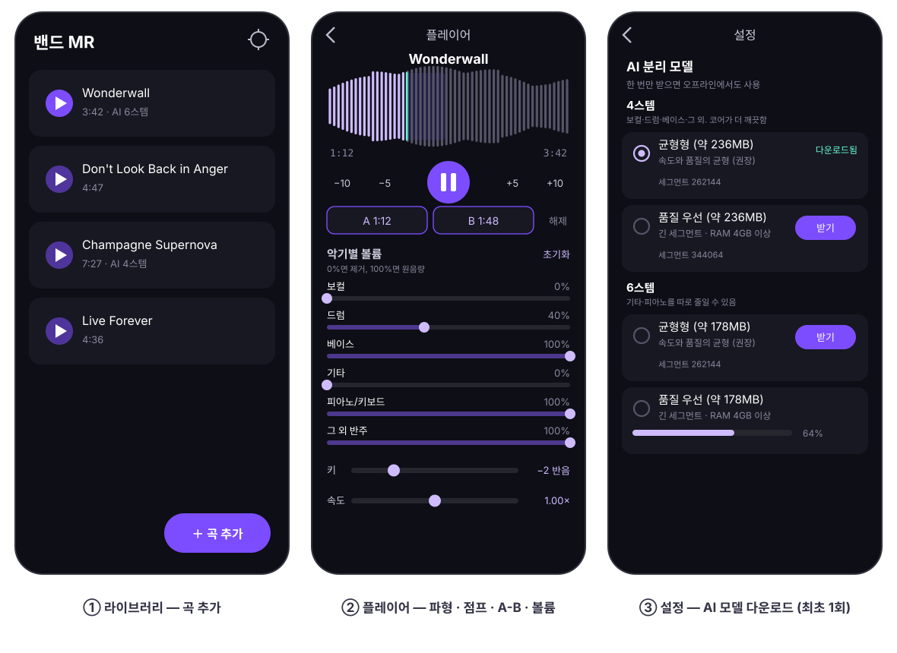
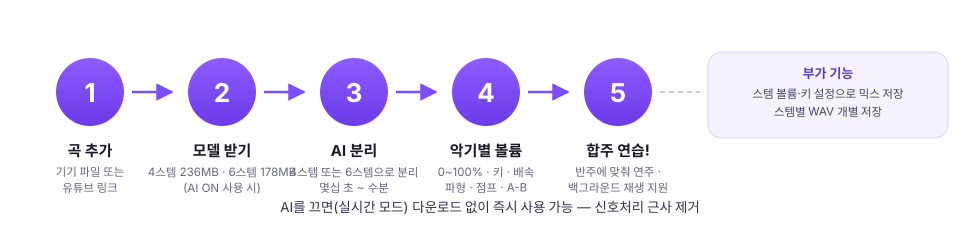
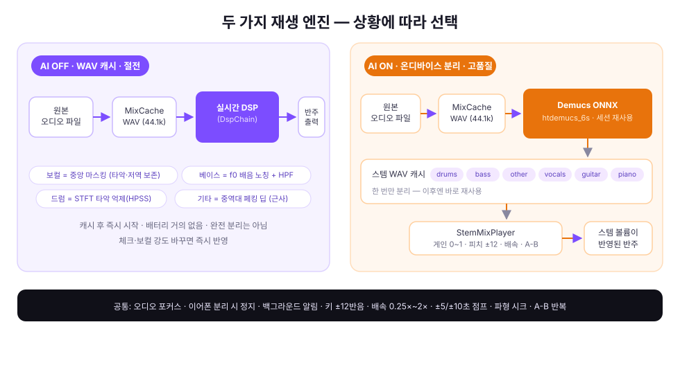

밴드 MR
좋아하는 곡에서 보컬·드럼·베이스·기타를 지우고, 남은 반주로 합주 연습을 하는 Android 앱
🤖 온디바이스 AI 분리 (Demucs)
⚡ 실시간 신호처리 모드
🎹 키 조절 ±12반음
📱 백그라운드 재생
01앱 화면 구성
곡 추가 → 제거할 소리 선택 → 연습. 세 화면이 전부입니다.

02시작하는 5단계
AI 없이도 바로 쓸 수 있고, 정확한 제거가 필요하면 모델만 받으면 됩니다.

03어떻게 지워지나? — 두 가지 엔진
즉시성을 원하면 실시간 신호처리, 정확도를 원하면 온디바이스 AI 분리를 켜세요.

실시간 신호처리 (기본)
- 다운로드 불필요, 즉시 동작
- 보컬: 좌우 위상 상쇄 (저역 중앙 성분 보존)
- 베이스: f0 배음 노칭 + 하이패스
- 드럼: STFT 타악 억제(HPSS)
- 체크 바꾸면 재생 중에도 즉시 반영
완전히 분리되진 않는 근사 처리 — 발표 전 빠른 연습용
온디바이스 AI 분리 (고품질)
- Demucs(htdemucs)를 ONNX로 변환해 폰 안에서 추론
- 곡당 1회 분리 후 스템 WAV 캐시 — 이후 즉시 재사용
- 체크한 스텝이 정확히 제거됨
- 모델 3종(세그먼트 길이 차이) 선택 가능
최초 1회 다운로드(약 236MB) · 분리에 몇십 초~수분
04AI 분리 모델 3종
같은 모델을 세그먼트 길이만 다르게 돌립니다. 길수록 품질↑ · 메모리/시간↑.
| 등급 | 세그먼트 | 특징 |
|---|
| 경량 우선 | 131,072 샘플 (≈3초) | 빠름, 저메모리, 저발열 |
| 균형형 (권장) | 262,144 샘플 (≈6초) | 속도와 품질의 균형 |
| 품질 우선 | 344,064 샘플 (≈7.8초) | 최고 품질 — RAM 4GB 이상 권장 |
모델은 SHA-256 무결성 검증과 함께 다운로드되며, 네트워크가 끊겨도 이어받기 됩니다.
05연습에 도움 되는 것들
| 기능 | 설명 |
|---|
| 키 조절 | ±12반음 (옥타브 포함) — 나의 튜닝에 맞춰 반주 이동 |
| 백그라운드 재생 | 화면을 꺼도 연주 계속, 알림에서 재생/정지/종료 |
| 오디오 포커스 | 전화 등 다른 소리가 오면 자동 일시정지 |
| 이어폰 분리 감지 | 이어폰/블루투스 분리 시 즉시 일시정지 |
| 내보내기 | 현재 설정으로 믹스 WAV 저장 · 스템별 WAV 개별 저장 |